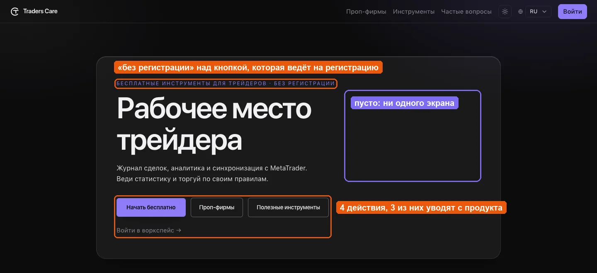
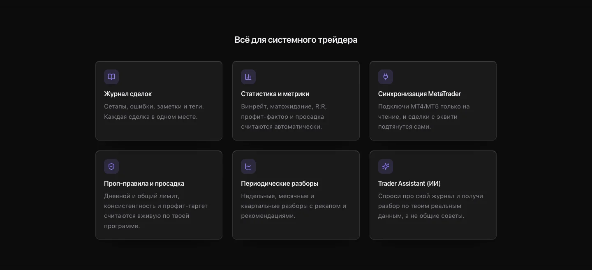
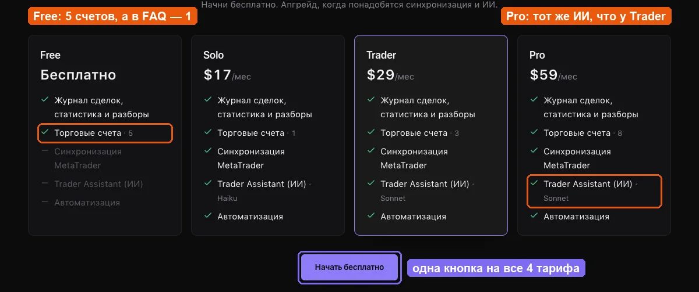
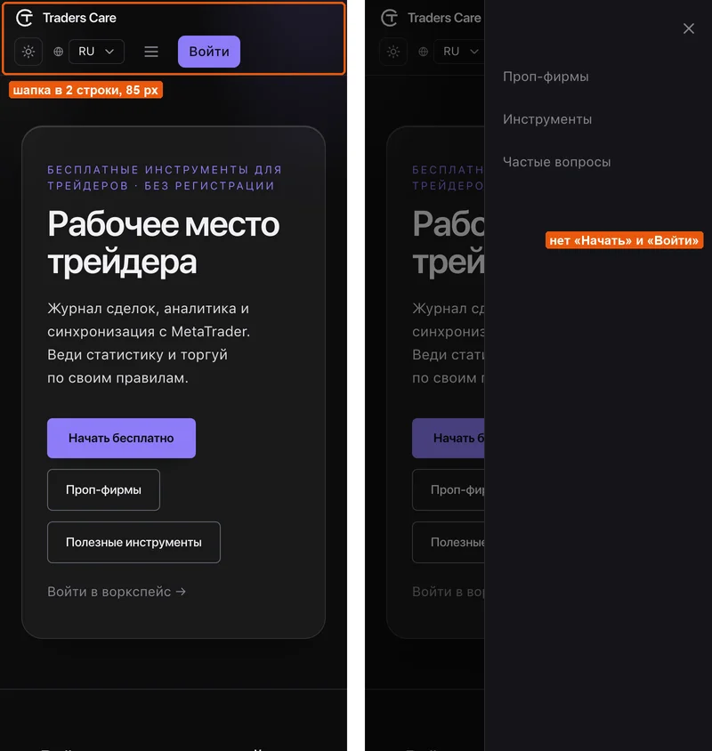
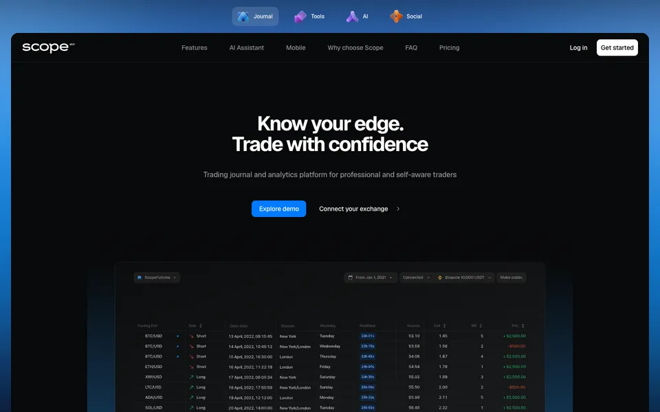
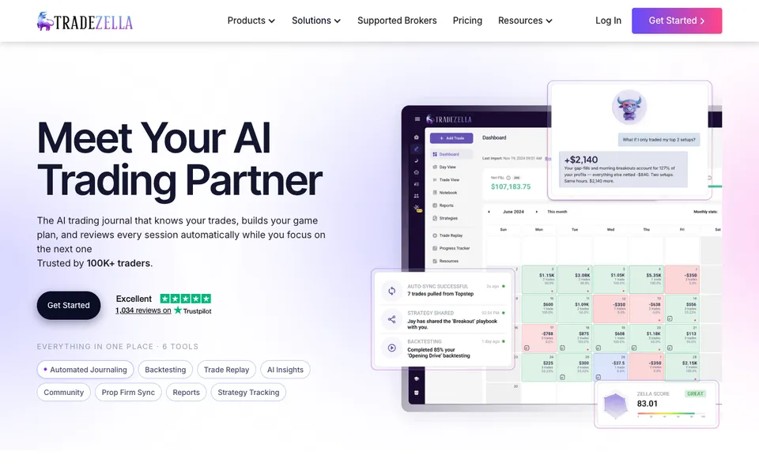
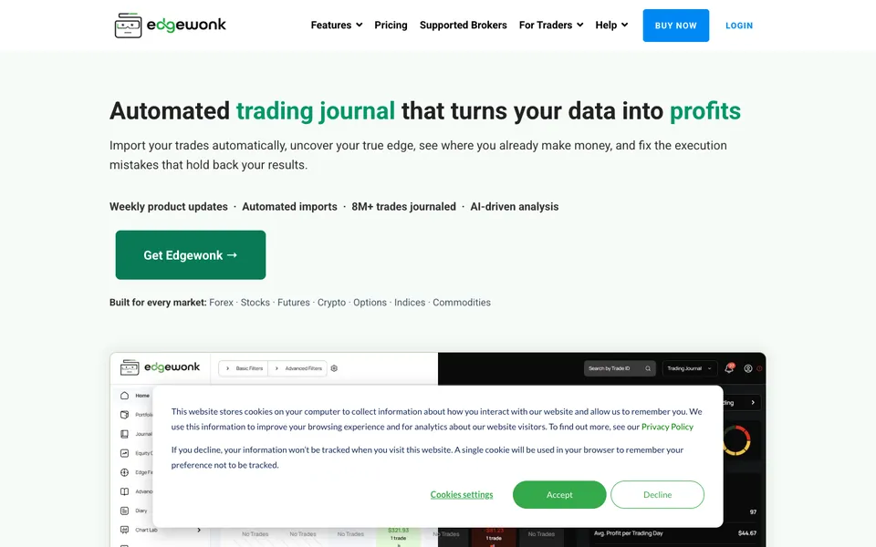
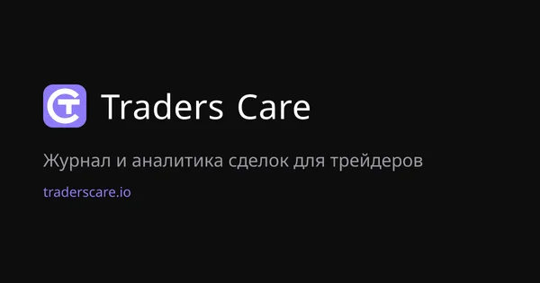

Traders Care умеет то, чего нет у конкурентов: живой контроль правил проп-фирм, данные брокера, которые нельзя подделать, проверяемые результаты. Главная страница этого не показывает — на ней четыре блока текста, ни одного экрана и две ошибки в тарифах. Ниже — что именно мешает, как это делают конкуренты и с чего начать.
Упорядочены по тому, насколько сильно каждая проблема влияет на регистрации и продажи.
Посетитель должен поверить на слово, что за текстом есть хороший интерфейс. У всех трёх конкурентов экран продукта — главный визуал уже на первом экране.
Как это работает, безопасно ли давать доступ к счёту, кто уже пользуется, чем это лучше Excel и конкурентов, как оплатить — ответов нет. Часть из них уже написана в FAQ, но на отдельной странице.
Живой контроль просадки и consistency, данные напрямую от брокера, верифицированные карточки, каталог проп-фирм с квизом, три языка, самые низкие цены на рынке — всё это либо одна строка, либо отсутствует.
На лендинге у Free 5 счетов, в FAQ — 1. У Pro указан тот же ИИ, что у Trader, хотя FAQ обещает Pro топовую модель. Для сервиса про точные цифры это особенно заметно.
Надзаголовок капсом, стеклянная карточка, сетка из шести одинаковых карточек с иконками. Каждое решение — самое типовое, поэтому страница не ощущается премиальной.
Каждая полоса — полный снимок лендинга на ширине 1440 px, повёрнутый набок. Длина полосы — длина страницы.
Длина сама по себе не цель. Но за ней стоят ответы на вопросы, которые покупатель задаёт до регистрации, — у Traders Care на них просто не осталось места.
Понятно, что это «рабочее место трейдера» с журналом и синхронизацией MetaTrader и что начать можно бесплатно. Непонятно, для кого это, как выглядит, чем отличается и почему можно доверить доступ к счёту.

Заголовок называет категорию, а не результат«Рабочее место трейдера» подходит любому продукту. Конкуренты обещают результат: «Know your edge», «turns your data into profits». У Traders Care есть своя сильная формула, которая нигде не используется: торговать по своим правилам и видеть, во что обходится каждое отступление.
Главная аудитория не видит своей болиПроп-трейдеры, которые боятся нарушить лимит просадки и потерять челлендж, упомянуты только в одной из шести карточек ниже.
Надзаголовок противоречит кнопке«Без регистрации» стоит над «Начать бесплатно», которая ведёт на регистрацию. Фраза относится к бесплатным калькуляторам, но читается как обещание про весь продукт.
Четыре равноценных действия«Начать бесплатно», «Проп-фирмы», «Полезные инструменты», «Войти в воркспейс». Три из четырёх уводят с продукта, а «Войти» дублирует кнопку в шапке.
Пустая половина карточкиПравая часть hero — самое дорогое место на странице — не занята ничем.
Сетка ровная, отступы последовательные, текст читается — к качеству вёрстки претензий нет. Проблема в том, что каждое решение выбрано самым типовым, и вместе они складываются в узнаваемый облик сгенерированного лендинга.

| Приём | Где | Что с ним не так |
|---|---|---|
| Надзаголовок капсом с разрядкой в цвете акцента | hero | Самый частый штамп сгенерированных страниц |
| Стеклянная карточка с размытием вокруг hero | hero | Контент заперт в рамке, половина рамки пустая |
| Сетка 3×2 «иконка в квадрате + заголовок + текст» | функции | Все функции одного веса, нет главной |
| Центрированный заголовок над каждым блоком | везде | Один ритм на всю страницу, композиция не меняется |
| Четыре одинаковые карточки тарифов | тарифы | Рекомендуемый тариф отмечен только тонкой рамкой |
| Размытое фиолетовое свечение в углу | фон | Декор без смысла вместо предмета |
Сайт использует SF Pro. Лицензия Apple разрешает его только на платформах Apple, поэтому раздавать его как веб-шрифт посетителям с Windows и Android нельзя. Редизайн — удобный момент перейти на шрифт с веб-лицензией и полной кириллицей, включая украинские ї, є, ґ.

Free: «Торговые счета · 5»В FAQ: «Free и Solo: 1 счёт». Бесплатный тариф на лендинге щедрее платного Solo.
Pro и Trader с одинаковым ИИОба — «Sonnet». В FAQ Pro получает «топовую модель с авто-эскалацией». Разница в $30 в месяц на лендинге не объяснена.
Нет пути к оплатеСейчас платный тариф активируется вручную через поддержку, оплата криптой. На лендинге об этом ни слова: человек выбирает $29 и попадает в бесплатную регистрацию.
Одна кнопка на четыре тарифаУ карточек нет своих кнопок, выбрать Trader или Pro нельзя.
Реальная разница между тарифами не показанаСинхронизация раз в 30, 15 и 5 минут не указана. «Автоматизация» не объяснена. «Haiku» и «Sonnet» ничего не говорят трейдеру — лучше «быстрый», «глубокий» и «максимальный» анализ.
Не сказаны сильные условия«Без автосписаний» — редкость на рынке и хороший аргумент. Годовой оплаты нет, хотя у Scope360 скидка 15%, у Tradezella около 25%.
Traders Care дешевле всех на каждом уровне, но на лендинге цены не с чем сравнить.
| Бесплатно | Вход с синхронизацией | Средний | Максимальный | |
|---|---|---|---|---|
| Traders Care | 1 счёт | $17 / мес | $29 · 3 счёта | $59 · 8 счетов |
| Scope360 | без подключений | $20 / мес | $45 · 10 счетов | — |
| Tradezella | — | $35 / мес | $59 | $99 |
| Edgewonk | — | $197 / год | — | — |
Продукт просит доступ к торговому счёту. Посетитель ищет подтверждение, что это безопасно и что продуктом уже пользуются. Конкуренты дают его сразу под первым экраном.
| Сигнал | Traders Care | Scope360 | Tradezella | Edgewonk |
|---|---|---|---|---|
| Экраны продукта | нет | крупно, тур вкладками | в каждом блоке | в каждом блоке |
| Рейтинг и отзывы | нет | Trustpilot | Trustpilot 4.8 | блок отзывов |
| Цифры масштаба | нет | нет | 100K+ трейдеров | 8M+ сделок |
| Логотипы платформ | нет | биржи | брокеры | брокеры |
| Безопасность данных | только в FAQ | только в FAQ | нет | отдельный блок |

Шапка в две строкиЛоготип сверху, под ним тема, язык, меню и «Войти» — 85 px экрана уходят на навигацию.
В меню три ссылки и ничего большеНет «Начать бесплатно», «Войти», тарифов и выбора языка.
Шапка не липкаяПосле первого экрана кнопки действия нет до конца блока тарифов. То же на десктопе.
Мелкие зоны нажатияПереключатель темы 32×32, язык 63×28, меню 36×36, «Войти» 70×36, ссылки в футере высотой 21 px. Рекомендуемый минимум — 44×44.
Однообразная прокрутка4 050 px страницы — это шесть одинаковых карточек функций и четыре тарифа подряд. Кнопки hero стоят стопкой разной ширины.
Первые экраны на ширине 1440 px. TraderSync не вошёл в сравнение: сайт закрыт проверкой Cloudflare.



Съёмка в Chrome, проверка доступности axe-core 4.10 в обеих темах, разбор HTML и метатегов трёх языковых версий.
Ссылка в соцсетях выходит без картинкиКартинка превью существует (1200×630), но в метатегах на неё нет ссылки. Поделиться лендингом в Telegram, X или Discord — значит получить голый текст. К тому же текст на картинке только русский.
Русская и украинская версии в 7 раз тяжелее английскойHTML 481 КБ против 70 КБ: в страницу вшит словарь переводов всего приложения — около 3 100 строк, которых на лендинге нет.
950 КБ на странице без единой картинки655 КБ CSS — стили всего приложения — и 617 КБ шрифтов. Для сравнения: Edgewonk со всеми скриншотами весит 807 КБ.
Недостаточный контраст текстаНедоступные функции в тарифах — 2.58 : 1, юридический дисклеймер о рисках — 2.99–3.17 : 1. Норма WCAG AA — 4.5 : 1.
Нет структурированных данныхБез разметки Organization, SoftwareApplication с ценами и FAQPage сайт не получает расширенных сниппетов в Google. og:url одинаковый для всех языков, twitter:site — не аккаунт.
Страница не кэшируетсяКаждый визит рендерится на сервере заново, хотя лендинг почти статичен.

Эта картинка уже лежит на сервере по адресу /opengraph-image — её достаточно подключить. В редизайне стоит сделать её на трёх языках и с экраном продукта.
В порядке: скорость отрисовки (LCP около 0.3 с — правда, потому что на странице почти ничего нет), видимый фокус с клавиатуры, hreflang для трёх языков, canonical, sitemap, автоматический выбор языка по браузеру.
Четыре правки занимают около часа работы разработчика и не зависят от редизайна.
Free — 1 счёт, Pro — топовая модель, как в FAQ.
Подключить уже существующую картинку в og:image.
Дисклеймер и недоступные функции — до 4.5 : 1.
Не загружать словарь всего приложения на публичные страницы.
Порядок, в котором посетитель получает ответы. Детальную структуру и тексты согласуем на следующем этапе.
Плюс по всей странице: липкая шапка с кнопкой, полноценное мобильное меню, шрифт с веб-лицензией, визуал без шаблонных приёмов, три языка и обе темы.